MANUAL INSTALACION JOOMLA EN MI ARROBA.COM
1.- Descargamos el programa de Joomla de https://downloads.joomla.org/ , lo descomprimimos y lo subimos por FTP a miarroba.-
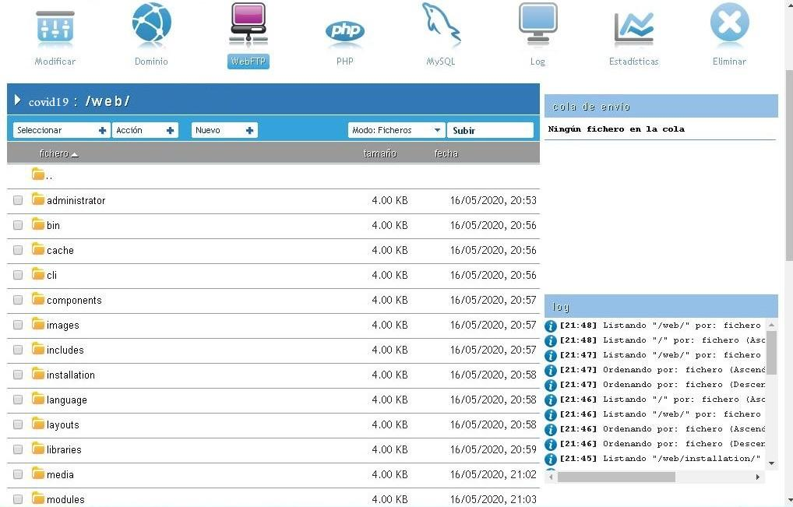
2.- Nos vamos a la carpeta de instalación y ejecutamos el index y se nos abre el Joomla para su configuración.-
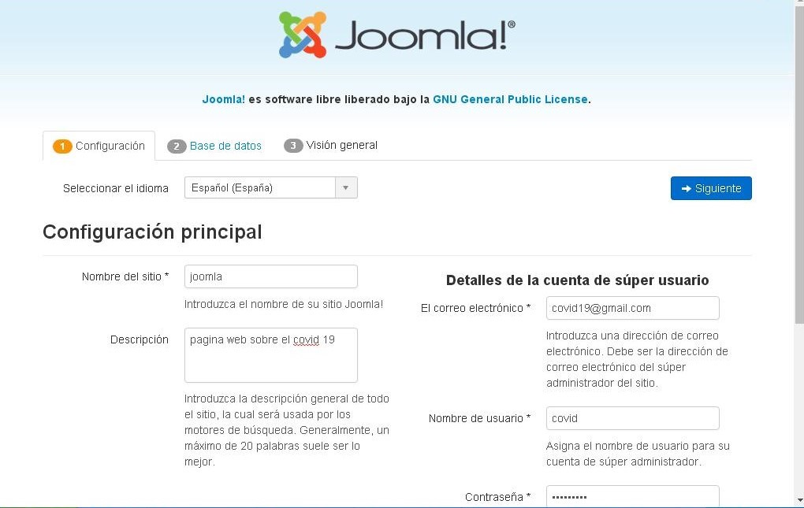
3.- Configuramos la base de datos.-
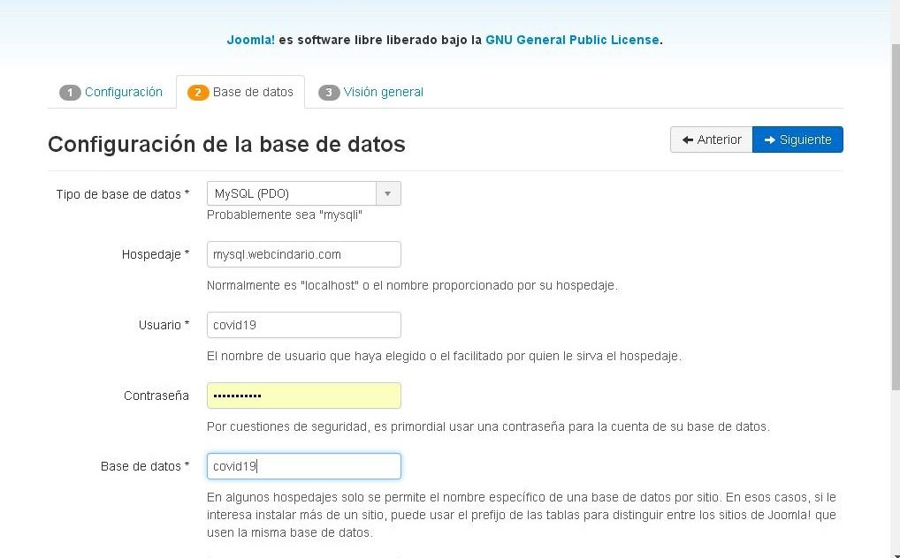
4.- Eliminar el archivo llamado "_joomlazxvmbg......." que hemos creado en la carpeta installation de miarroba.-
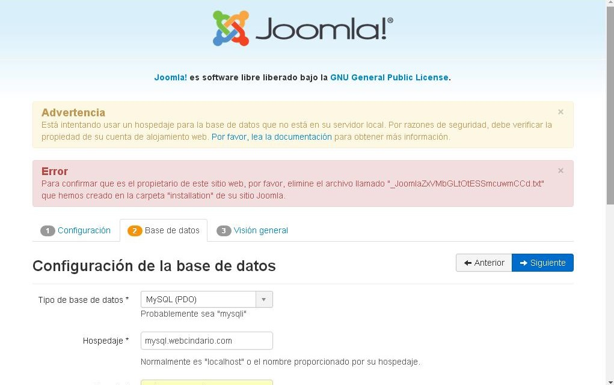
5.-Archivo a eliminar.-
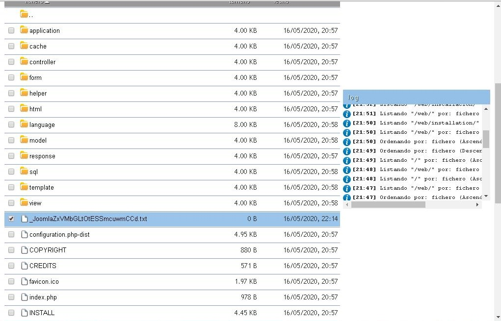
6.- Activamos la casilla ninguno y ponemos el correo electronico, le damos a instalar.-
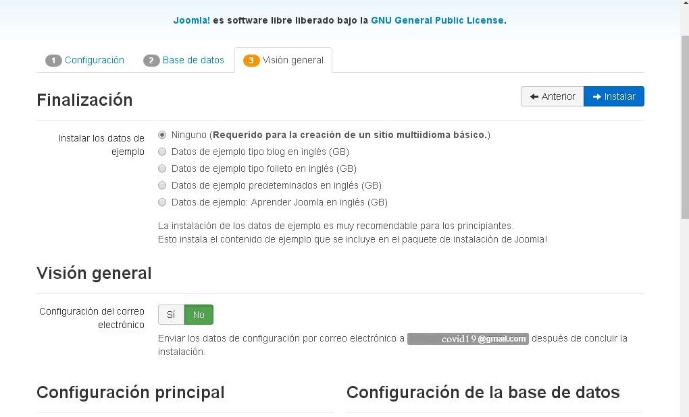
7.- Instalando.-
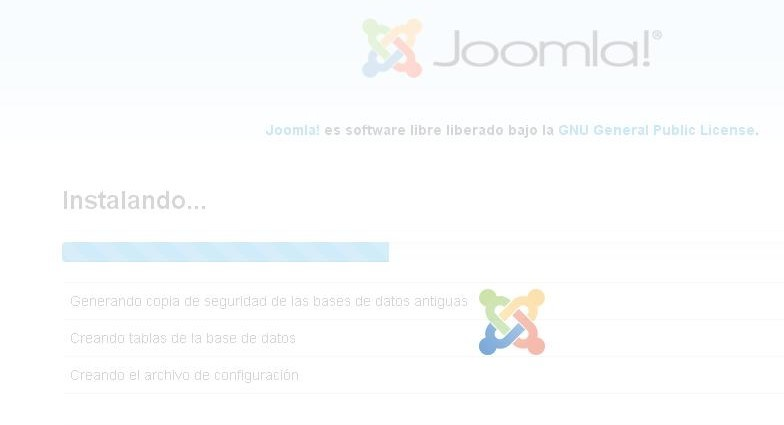
8.- Le damos a pasos extras para instalar el idioma.-
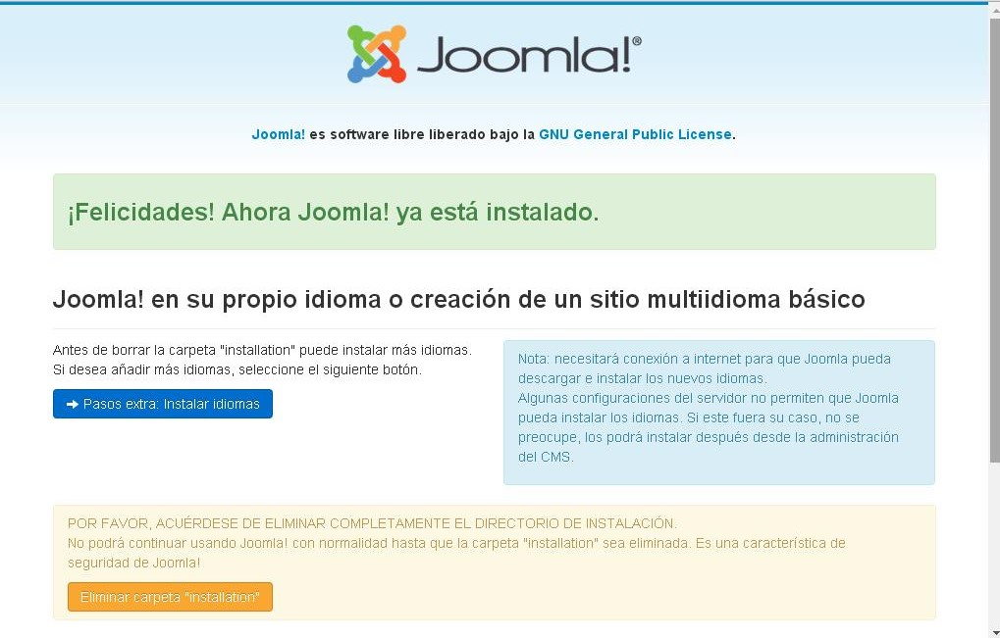
9.- Buscamos el idioma y siguiente.-
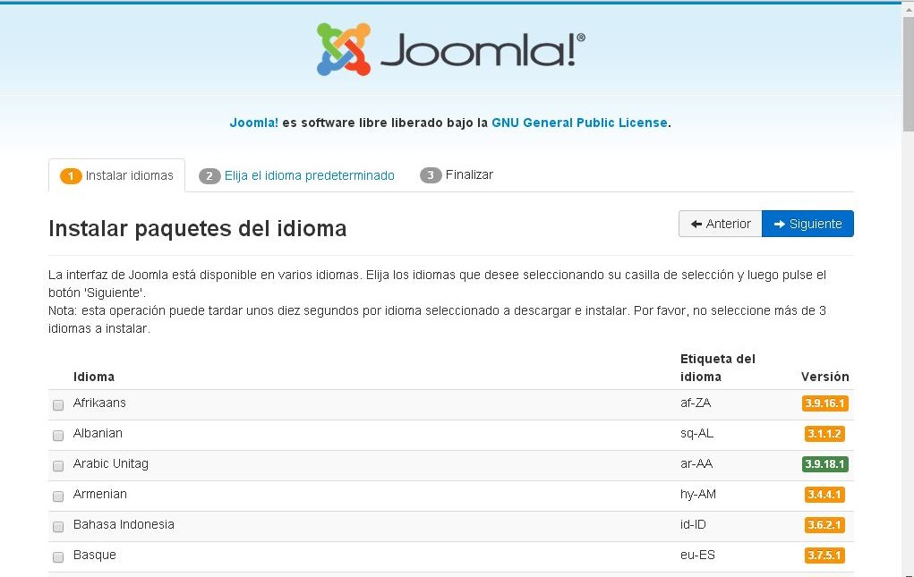
10.- Activamos el idioma para la administración y el sitio.-
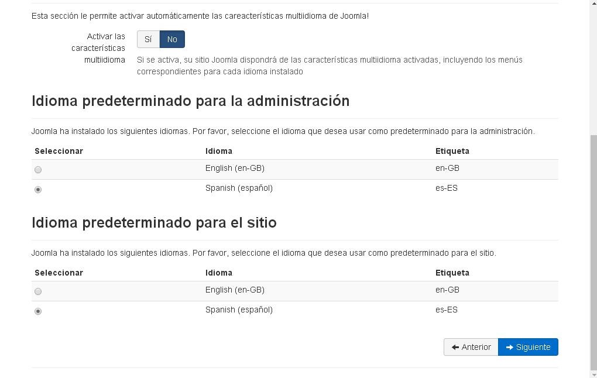
11.- Desde este apartado eliminamos la carpeta de installation.-
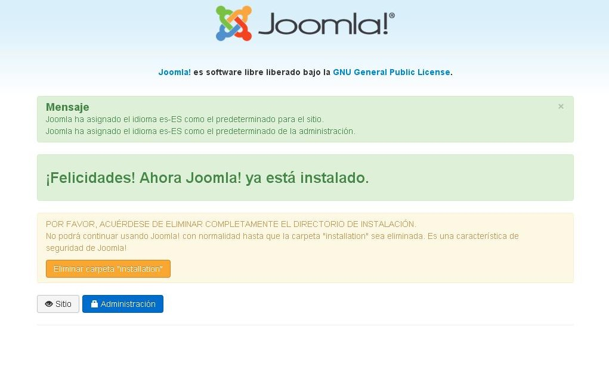
12.- Listo ya podemos ir al sitio o a la administración.-
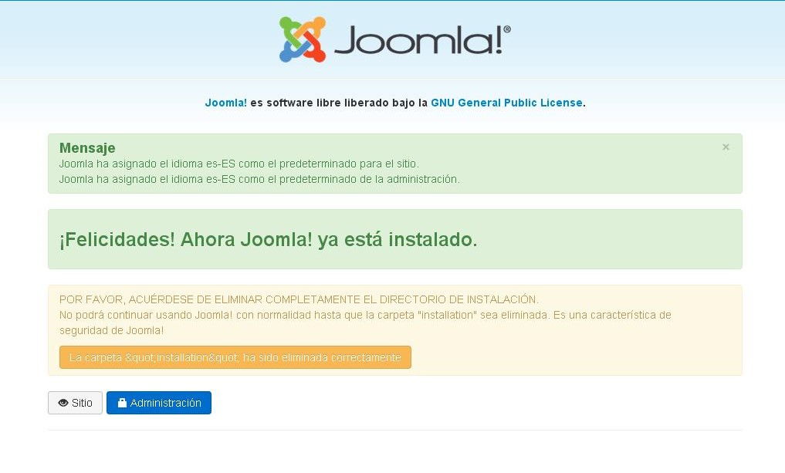
13.- Conectamos.-
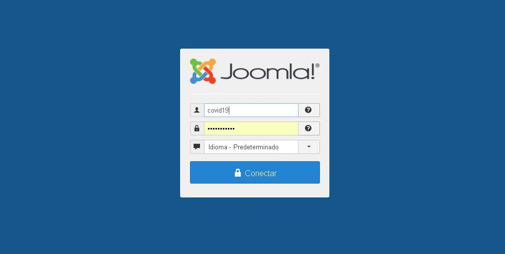
SALUDOS
Andaluzsoy